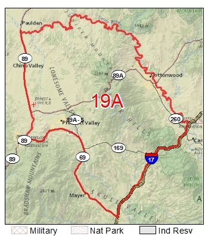

Back to main
Hunting - 19A (Prescott / Yarnell)
Here's a link to the Game and Fish site: Game Management Unit 19A

Carl's Spot
Starting point is the center of Yarnell. Google Maps: Drive 33.6 miles, 1 h 9 min
- Leaving Yarnel
Follow AZ-89 N from the center point in Yarnel for about 11.6 miles until you reach Wagoner road, which is a road on the right.
-
S Wagoner Rd
Turn right onto S Wagoner Rd. Wagoner Rd. is paved most of the way and we will be on this road for a while. After about 8.5 miles, you will reach a bridge.
-
S Wagoner Rd (After Bridge)
Continue over the bridge. After this, continue on S. Wagoner Rd. The road is paved
for another 2.5 and then becomes a dirt road.
-
S Wagoner Rd (Dirt Road)
After S Wagoner Rd becomes a dirt road, we will be staying on the road for 4.7 more
miles. While driving on the dirt road, you should see some cattle ranches about a mile or so before the
4.7 mark. At 4.7 miles, you should see a sharp turn to the left (almost a U-Turn). Take this turn.
-
Fr 682
Once on this road, you will continue for about another 2.5 miles up a mountain. Around the 2.5 mile mark,
the road on the mountain will curve to the right.
-
Fr 682 - After Mountain Curve
After the mountain curve, we will stay on the main road for another 3.3 miles.
NOTE: Along the main road (around 3 miles or so since the mountain curve, there will be a road to the
left that heads north. DO NOT take this road. But, for reference, this road leads to another area we
sometimes camp.
-
Fr 682 - After Barn
After the barn, the road curves the left and then again to the right. At around .8 miles after the barn,
be on the lookout for the wash. After crossing the wash, make a right after about .1 miles. So, in total,
you will be making a right .9 miles after you passed the barn. Be on the lookout for this turn as soon
as you cross the wash. It is easy to miss.
-
Home Stretch
After the right turn following the wash, continue heading west on this dirt road for. You'll cross
over the wash again and then camp will be on your right.
The following map starts from a center point in Yarnell: